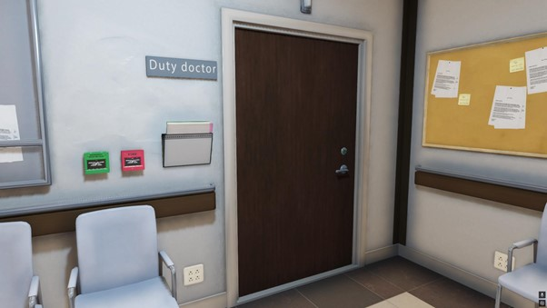
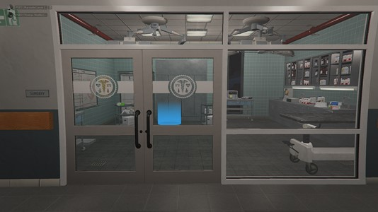
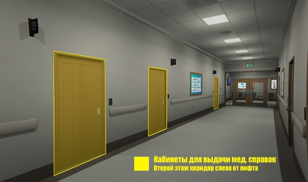

Регламент выдачи мед. справок
Физическое и психическое здоровье · цены и процесс
Медицинские справки
Места выдачи, цены, порядок осмотра, вопросы пациенту и отыгровки для выдачи физической и психической справок.
Сенди-Шорс: Дежурный кабинет на 2 этаже.

Палето-Бэй: Операционная слева.

ELSH: Кабинеты 01, 02, 03 на втором этаже (коридор слева от лифта).

- ✔Уточняем, какие справки нужны, и уведомляем о стоимости.
- ✔Уведомляем, что справки действительны 14 дней.
- ✔Перед физическим осмотром интересуемся, есть ли у человека жалобы на физическое здоровье. Если есть — направляем на приём к Хирургу.
- ✔Если гражданин пришёл обновить справки и жалоб нет — в физ. осмотре не нуждается. Просто заполняем физ. справку и выдаём. По псих. справке задаём 2–3 основных вопроса без ситуаций.
- ✖Выдавать справки без предварительного осмотра (кидать справки в лицо) категорически запрещено.
- 1Уточняем, какие справки нужны, и уведомляем о стоимости + срок действия 14 дней.
- 2Спрашиваем, получает человек справки впервые или обновляет.
- 3Просим показать паспорт. Если справки обновляются, просим показать просроченные (обращаем внимание на дату. Если менее 7 дней назад — уведомляем и не обновляем).
- 4Уведомляем пациента, что ко всем вопросам нужно относиться серьёзно, и любой «шуточный» ответ может повлечь отказ и направление на соответствующее лечение.
- 1Просим снять верх и слушаем пациента.
1.1 Если есть грипп или отравление — сразу делаем вакцину. - 2Подходим к столу с бланками, задаём вопросы:
— Получали ли вы травмы в ближайшие недели?
— Имеются ли хронические заболевания или аллергия на что-либо?
— Противопоказания на какие-либо препараты имеются? - 3Общий осмотр:
3.1 После ответов просим лечь на кушетку и проводим общую проверку (кардиограмма, проверка температуры, оценка опорно-двигательных рефлексов).
3.2 После проверки просим встать с кушетки и надеть одежду.
3.3 Подходим к столу и выписываем справку о физ. здоровье. - 4Составляем отчётность о выданной справке.
- 1Находясь у стола, задаём вопросы:
— Сколько часов в сутки спите?
— Имеются ли суицидальные мысли? А тревожные?
— Употребляете ли наркотики? А алкоголь?
— Оцениваете себя больше как оптимист или пессимист?
— Как часто бывает подавленное настроение? Что может его вызвать? - 2После предлагаем представить ситуации:
2.1 Вы вечером гуляете со своей второй половинкой. Подходит человек и начинает её оскорблять. Ваши действия?
• Ответ «выстрел в воздух / в землю / в ногу / в руку» → справку выдать можно.
• Ответ «стрелять в тело или голову» → в выдаче отказано.
2.2 Вас окружили 4 вооружённых человека, требуют телефон и деньги, а у вас при себе ручная граната. Ваши действия?
2.3 Для чего и зачем используется огнестрельное оружие?
2.4 Врач оставляет за собой право на проведение дополнительной целенаправленной диагностики в случае неопределённости с оценкой психоэмоционального статуса и вегетативного фона пациента.
- 3Подходим к столу и выписываем пациенту справку о псих. здоровье.